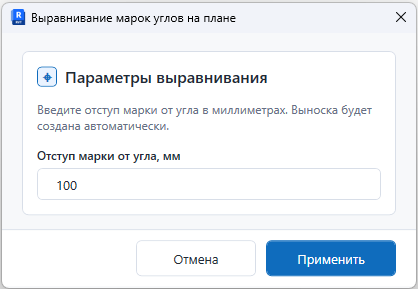

Что делает команда
- Находит марки углов, связанные с развертками.
- Смещает марки на заданный отступ от угла.
- Помогает привести план к единому визуальному виду.
Развертки
Команда выравнивает марки углов на плане и задает единый отступ от угла.
Сценарий 01
Используйте команду после создания разверток, если марки углов стоят на разном расстоянии или мешают чтению плана.
Окно

Сценарий 02